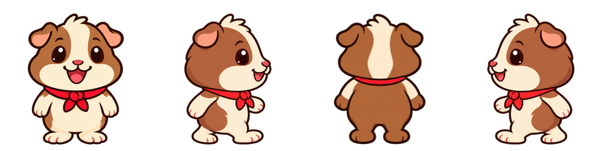
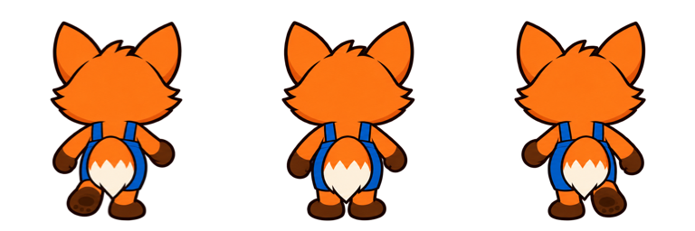

Pelaje liso y cola centrada
Las mismas curvas suaves y manchas definidas del cuy en sus distintas vistas. El zorro lleva la cola sobre el centro de la cadera.
Cuy: un mismo estilo en todas las vistas
Frente originalLateral originalEspalda lisa Contornos redondeados y manchas limpias. La izquierda usa el mismo lateral reflejado, como en el juego.

Zorro: cola centrada
Anterior: cola a un ladoCorregido: cola al medio La cola nace en el centro de la pelvis y cae entre las patas, con un balanceo pequeño alrededor del mismo eje.

Los atlas intermedios se retiraron. Se conservan las fuentes y referencias de esta revisión; las otras filas de los atlas mantienen sus píxeles aprobados.